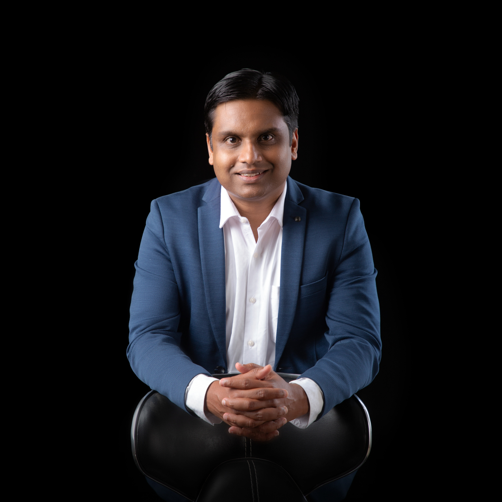

Rebuilding faces, one voxel at a time.
Consultant Oral & Maxillofacial Surgeon in Sri Lanka · Doktorand (PhD), Malmö University. Orthognathic (corrective jaw) surgery, wisdom teeth & implants, facial reconstruction and head & neck cancer surgery — every complex case planned in 3D before the first incision. Consultations in Colombo & Nuwara Eliya.
The surgeon-engineer.
I'm a Consultant Oral & Maxillofacial Surgeon and doctoral researcher at Malmö University, practising a digital-first approach — every complex case is planned in Virtual Surgical Planning (VSP) and executed through CAD/CAM workflows.
I design and produce patient-specific implants — selective-laser-melted titanium and PEEK, subperiosteal implants and total TMJ prostheses — alongside microvascular free-flap, cleft & craniofacial and orthognathic surgery, across the full spectrum of the specialty.
I also build the tools. I co-developed an internationally adopted open-source surgical-planning platform, bringing tertiary-level reconstruction to a government hospital outside a tertiary centre — at a fraction of commercial cost. I'm a certified postgraduate Trainer and Examiner in OMFS at the PGIM, Colombo.

Surgical technology, made open.
Affordable, transparent, reproducible planning — so advanced reconstruction isn't limited by where a patient is treated.
SlicerBoneReconstructionPlanner
Mandibular reconstruction with a vascularised fibula free flap, planned end-to-end in the open-source 3D Slicer extension — automated fibula segmentation, virtual osteotomies and printable resection & cutting guides.
LibreRespire Ventilator
An open-source initiative developing an affordable, medical-grade mechanical ventilator in response to the COVID-19 shortage.
Visit project ↗Patient-Specific Implant Workflow
End-to-end design and manufacture of titanium (SLM) and PEEK implants and resin surgical guides — print-failure held below 0.5% per resin bottle.
See the practice ↘From the theatre to the factory floor.
The full cycle of surgical innovation — treating patients with digital tools, and co-founding the companies that design and manufacture them.
Protomed CMF
A medical manufacturing company producing patient-specific implants in 3D-printed titanium and PEEK for complex cranio-maxillofacial reconstruction — with a full virtual surgical planning service and high-precision surgical guides fabricated on in-house resin and metal 3D printers.
Patient-specific implants · VSP · surgical guidesClear Plus
An international clear aligner brand — bringing digitally planned orthodontic treatment to patients through the same CAD/CAM and additive-manufacturing foundations that drive the surgical work.
Clear aligner therapy · digital orthodonticsFull-spectrum oral & maxillofacial surgery,
digitally planned.
From wisdom tooth removal to major facial reconstruction — every complex case begins as data, segmented, simulated and guided before the first incision. Consultations in Colombo & Nuwara Eliya.
Orthognathic (Corrective Jaw) Surgery
Surgery to reposition the jaws for bite problems, facial balance and sleep apnoea — the occlusion, profile and airway simulated in 3D before theatre.
Wisdom Teeth & Dental Implants
Routine and surgical wisdom tooth removal, single implants, and full-mouth rehabilitation with zygomatic implants for severe bone loss.
Head & Neck Cancer Surgery
Major oral, jaw, parotid and salivary-gland cancer surgery — with digital reconstruction planned as part of the resection, not after it.
Facial Trauma & Reconstruction
Facial fracture repair and microvascular free-flap reconstruction of the face and jaws after cancer or injury — fibula, radial forearm and beyond.
Cleft Lip & Palate Surgery
Cleft and craniofacial surgery across all ages, including alveolar-cleft reconstruction with guided bone regeneration.
Patient-Specific Implants & TMJ
3D-printed titanium & PEEK implants for jaw, skull and orbital defects, subperiosteal implants and total TMJ replacement — designed and manufactured in-house.
Training the next generation.
Doktorand (PhD), Oral & Maxillofacial Surgery
Malmö University, Sweden — alveolar-cleft reconstruction, PEEK & guided bone regeneration, open-source digital workflows.
MD in Oral & Maxillofacial Surgery
University of Colombo / PGIM.
University of Peradeniya
Distinctions in Oral Pathology & Restorative Dentistry.
Certified Trainer & Examiner in OMFS
Post Graduate Institute of Medicine (PGIM), Colombo — Board of Study & Specialty Board roles.
President, Government Dental Surgeons' Association
Sri Lanka.
Local Faculty — AO CMF Condyle Fractures Course
AO Foundation.
16 publications & presentations
Research spanning digital surgery, reconstruction and open-source tooling.
Frequently asked questions.
What does an oral & maxillofacial surgeon treat?+
An oral and maxillofacial (OMF) surgeon is the specialist for surgery of the mouth, jaws, face and neck. In Sri Lanka this covers wisdom tooth removal, dental and zygomatic implants, corrective jaw (orthognathic) surgery, facial trauma, cleft lip and palate, head & neck cancers and complex facial reconstruction.
How do I choose the best oral & maxillofacial surgeon in Sri Lanka?+
Check for SLMC specialist registration, board certification through the PGIM (University of Colombo), active consultant hospital appointments, and specific experience in the procedure you need. For complex jaw or facial reconstruction, ask whether the surgeon uses 3D virtual surgical planning and patient-specific implants — and ask to see how your own surgery would be planned.
What is orthognathic (corrective jaw) surgery?+
Orthognathic surgery repositions the upper jaw, lower jaw or chin to correct bite problems, facial imbalance and obstructive sleep apnoea. Every case here is simulated in 3D beforehand, so the bite, facial profile and airway are planned before theatre.
Do you perform wisdom tooth removal and dental implants?+
Yes — from routine and surgical wisdom tooth extraction to single dental implants and full-mouth rehabilitation with zygomatic implants for patients with severe bone loss.
What are patient-specific implants (PSIs)?+
Patient-specific implants are designed on your own CT scan and 3D-printed in titanium or PEEK to fit exactly — used for jaw reconstruction, skull (cranioplasty) and orbital defects, and total TMJ replacement. They are designed and manufactured through Protomed CMF.
Where do you consult in Sri Lanka?+
Consultations are available in Colombo and Nuwara Eliya, Sri Lanka, with international academic collaboration through Malmö University, Sweden. Contact by WhatsApp, phone or email to arrange an appointment.
Let's collaborate.
A consultation, a second opinion, or a collaboration in surgical technology — get in touch.
Consultations — Colombo · Nuwara Eliya · Sri Lanka